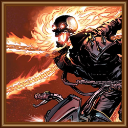

Creating Life In Media
How do writers develop different, interesting characters for their audiences?
We love media production. We hope that through this website, readers will gain more love for it, too.
We want viewers to see how characters were developed in various, popular pieces of media, whether those be shows, movies, novels, or video games. We tackle the core issues and patterns in writing interesting characters with depth to their story, and attempt to analyze why lesser-loved characters may have struggled to gain audience attraction after their debut. A blog like this ultimately hopes to create a deeper appreciation in its audience to the time and energy that goes into creating well-written characters, and hopes to propel them forward in their own creative journies.
The image above portrays a variety of characters from different pieces of media, showing the range of areas where character analysis can come in handy. Not only does understanding this deeper level of stories help with analyzing and creating movies like Batman or Lord of the Rings, but also with video games like Pokemon or even live events like WWE. These characters have vastly different stories and personalities in their piece of media, and they are all connected by audience love for them--love that exists because of how much time was placed into sculpting every piece of them.
Interesting Cases
Relationship Case

The depth of a character can develop depending on who they surround themselves by. In this scene, Lip, our protagonist on the right, is sitting across from a professor who is in prison for a DUI. This professor has been his mentor, both in academics and in his alcoholism, and their complex dynamic over the seasons has helped grow Lip's personality.
Presentation Case
The way a character is depicted, or chooses to depict themselves, can change how they are perceived both in the story and by viewers. Ghost Rider would be a wildly different character without his iconic flaming chains, skull face, leather jacket, and motorcycle. They build his personality and allow more depth, especially when his appearance changes.
Symbolism Case
In La La Land, Sebastian is often placed next to (or actively playing) pianos throughout the film. His appreciation and love for music helps develop his strong personality, and connects with the equally artistic nature of Mia. A symbol such as this helps explain their passions in life and makes the bittersweet ending feel more fulfilling and grounded in reality.